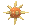
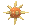

Hoenn Dex

Hoenn Dex

-
As solas dos pés estão cobertas por incontáveis espinhos minúsculos,
permitindo-lhe caminhar sobre paredes e tetos..
-
Ele vive em florestas densas. Ao aproximar-se de sua presa, ele pula
de galho em galho.
-
As folhas que crescem em seus braços podem cortar árvores grossas. É
sem igual em combate na selva.
-
Ele tem um saco de chamas dentro de sua barriga que queima
eternamente. Parece quente, se for abraçado.
-
Durante uma batalha, a chama quente em seu corpo aumenta. Seus
chutes têm notável poder destrutivo.
-
Chamas jorram dos pulsos, envolvendo os nós dos dedos. Seus socos
queimam seus inimigos.
-
Para alertá-lo, a barbatana na cabeça detecta o fluxo da água. Ele
tem força para levantar pedras.
-
Viver em terreno lamacento e com péssimos pés tornou as pernas
resistentes.
-
Pode nadar enquanto reboca um navio grande. Ele derruba os inimigos
com um único movimento de seus braços grossos.